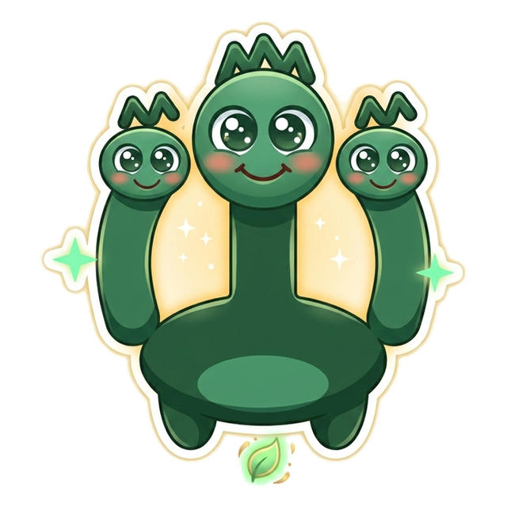
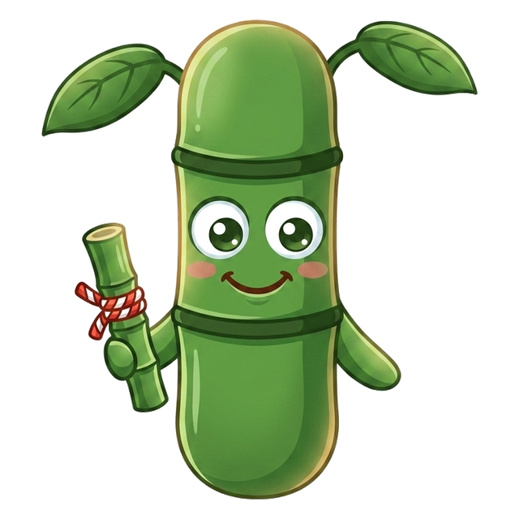
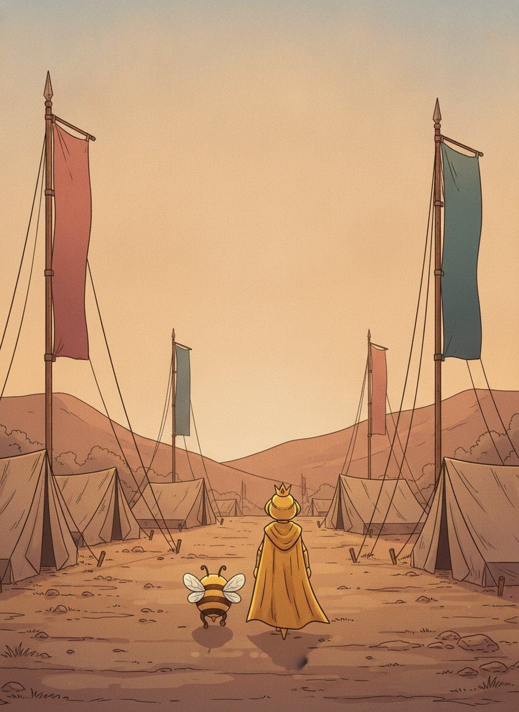
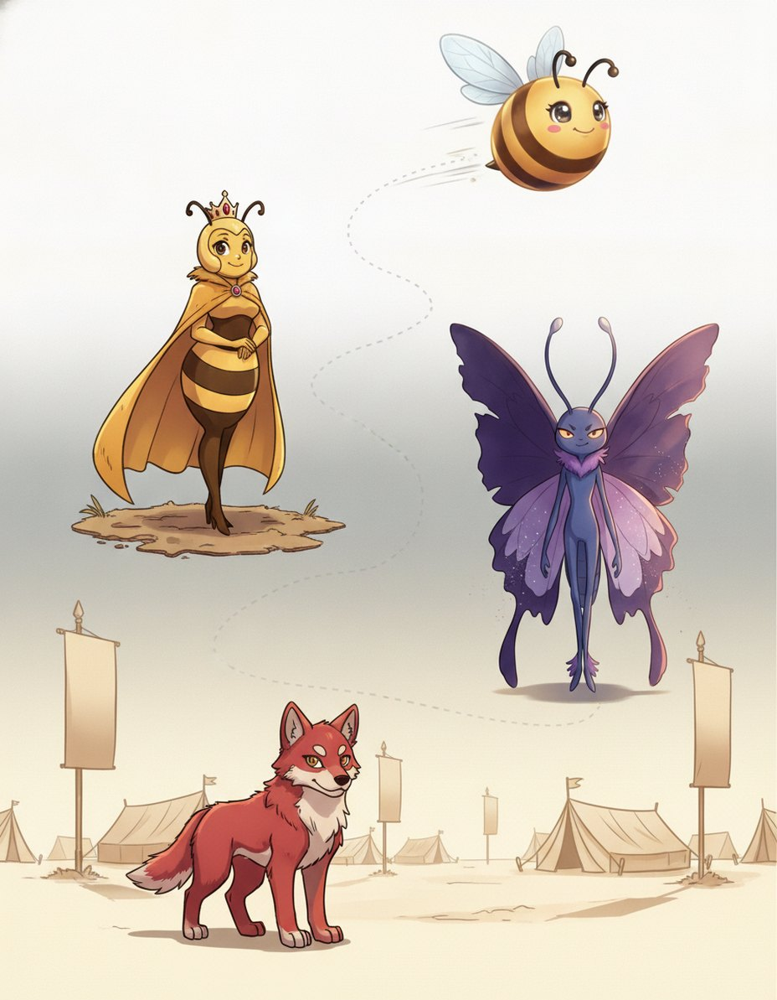
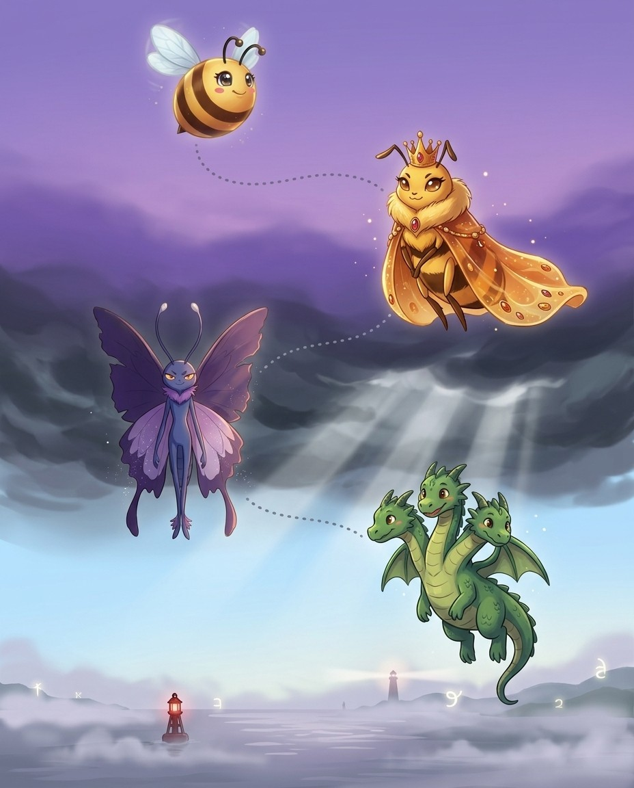
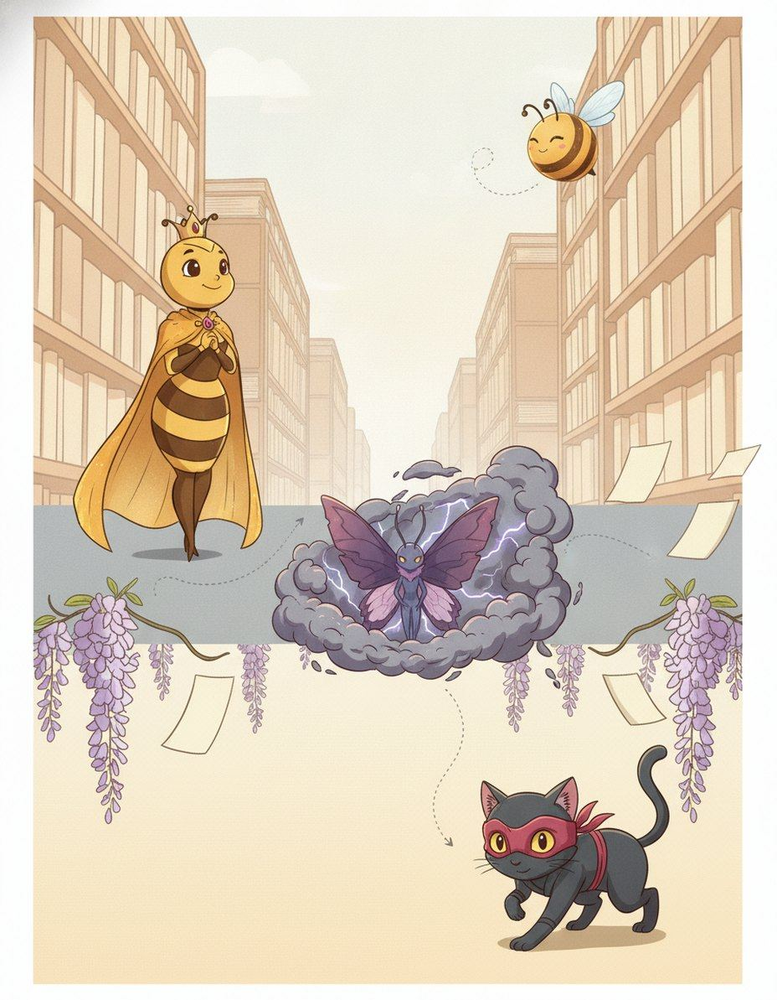
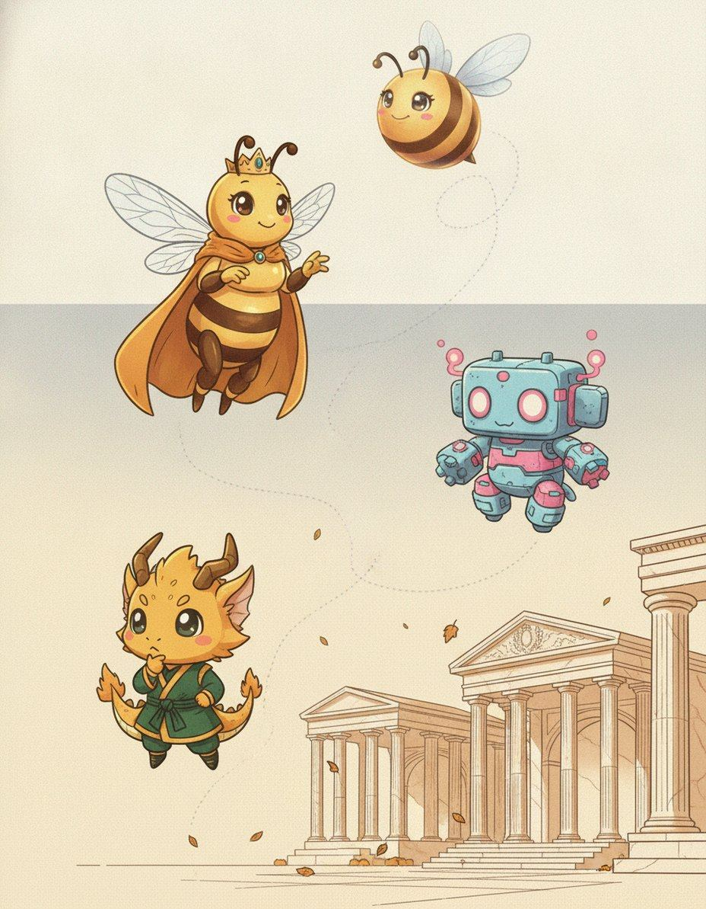
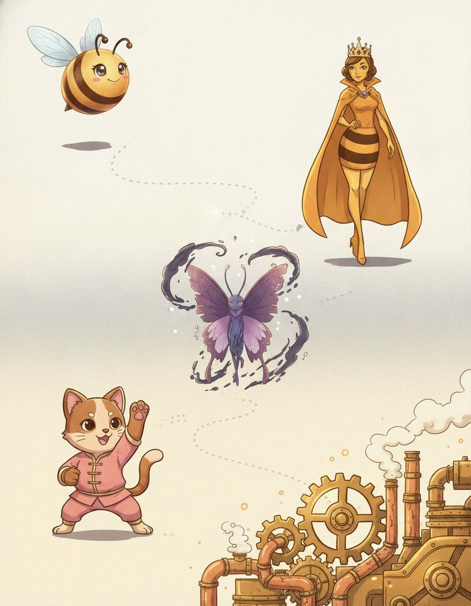
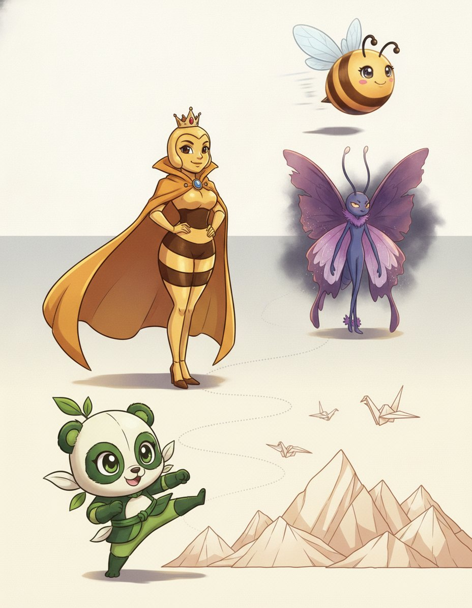

I'm Queen Hive. Bee-day procedure and deep orthography. Nothing in this book is filler — if a page is here, a real speller lost a real word without it.
1
Read the story
Each chapter opens as a storyboard. Vex sets the trap; the crew talks you out of it.
2
Steal the pro move
The dark box is how a champion thinks on stage. It works on brand-new words too.
3
Spell out loud, then write
Say it, spell it aloud, write it. The order matters — it is how the stage will ask for it.
4
Pass the checkpoint
A short quiz on the chapter, gated at 90%. Circle your answers, then verify at the back.
5
Play the game, then revise
Every chapter ends with a fun game, answer key at the back. Revise all words at the end and circle the ones you can spell and define.
Bizzing Bee · The Playbook1
The PlaybookThe cast
Bizzy — and this book's guide, Queen Hive
The crew of Vol. 11
The ensemble for this volume. They host the drills and checkpoints; the work is still yours.
Bizzy — The little bee who spells the world back together, one petal at a time. · Queen Hive — The wise ruler of the Hive, keeper of every name.
Fang
OVR 70
Champion of Legend
A creature of the night with a soft side.

Hydra
OVR 84
Grandmaster of Legend
Cut off one head and two more appear.
Titan
OVR 86
Grandmaster of the Speedway
The unbeatable champion of the Speedway.
Shadow Ninja
OVR 60
Speller of the Dojo
Strikes only the right letter, never a wrong one.
Golem
OVR 62
Speller of Legend
Clay brought to life to protect the weak.
Phantom
OVR 80
Champion of Legend
Here, then gone, like a word half-remembered.
Lucky Neko
OVR 65
Speller of the Dojo
A paw raised for good luck and good spelling.

Bamboo
OVR 73
Speller of the Dojo
Bends in the wind but never breaks.
And the other one
Vex, the word-moth. Every trap in this book is one it has watched a speller fall into on a real stage.
Bizzing Bee · The Playbook2

WELCOME TO
The Proving Ground
The Proving Ground: where bee-day plans are drilled until they hold.
Bizzing Bee · The Playbook3

1Championship Procedure · the Proving GroundSchwa Rescue — find the relative that stresses the vo…
BizzyThe schwa gives you nothing
Queen HiveIt works across the whole language
VexDEF-uh-nit — which vowel is that?
GolemFind a relative that stresses it
♫ narratedturn the page — the whole trick, explained →
4
Chapter 1 · Schwa Rescue — find the relative that stresse…The idea · ★★★
The big idea
The schwa is the largest single source of misspelling because it carries no spelling information: any vowel, and the letter y, can reduce to it. Listening harder cannot help.
The pro move
DEFINITE
Problem. DEF-uh-nit — the second vowel is a schwa, so it could be a, e, i, o or u
Find a relative. definition
Stress it. def-i-NI-tion — the syllable is now stressed
Read the vowel. i
Return. def-i-nite
Why the schwa is different
Every other sound in English narrows your options. Hear /f/ and you are choosing between f, ph and gh. Hear a schwa and you are choosing between every vowel in the alphabet plus y.
The relative test
English keeps a vowel's spelling constant across a word family even when the sound changes. So a relative where the syllable is stressed shows you the letter directly.
Vex alert
Definite ends in -ite not -ate — remember 'finite' hides inside definITE.
Check yourself
Book closed: definite · competence · separate, out loud, full words. At this level, almost right is still an elimination.
Bizzing Bee · The Playbook5
Chapter 1 · Schwa Rescue — find the relative that stresse…Practice · ★★★
Say it. Spell it out loud. Write it.
definite
/ DEH-fuh-nuht / · /ˈdɛfənət/
precise; explicit and clearly defined
hook: Definite ends in -ite not -ate — remember 'finite' hides inside definITE.
I want a ▁▁▁ answer.
competence
/ KAH-mpuh-tihns / · /ˈkɑmpətɪns/
the quality of being adequately or well qualified physically and intellectually
hook: comPETENCE ends in ENCE not ANCE — think 'excellent competENCE shows you can.
Her ▁▁▁ in both math and science made her a top candidate for the engineering scholarship.
separate
/ SEH-per-ayt / · /ˈsɛpəreɪt/
a separately printed article that originally appeared in a larger publication
hook: There's 'a rat' in sep-A-RAT-e — the rat separates the two e's.
Our teacher passed around a ▁▁▁, a single article reprinted from the big journal.
benefit
/ BEH-nuh-fiht / · /ˈbɛnəfɪt/
financial assistance in time of need
hook: BENEfit: think BENE (well) + FIT — a benefit makes you financially FIT, and it's spelled BENE not BENI.
For the ▁▁▁ of all.
category
/ KA-tuh-gaw-ree / · /ˈkætəɡɔri/
a collection of things sharing a common attribute
hook: CATEGORY: a CAT in a GORE-y story belongs in its own — spell it catEGORY, hiding GORE in the middle.
Which ▁▁▁ does a dolphin belong to, since it swims yet breathes air like us?
comparative
/ kuh-MPEH-ruh-tihv / · /kəˈmpɛrətɪv/
the form of an adjective or adverb that shows more of a quality, like 'faster'
hook: COMPAR-ATIVE: the A after COMPAR is the KEY—think 'A for Assessment of similarities.'
`faster' is the ▁▁▁ of the adjective `fast'.
Bizzing Bee · The Playbook6
Chapter 1 · Schwa Rescue — find the relative that stresse…Practice · ★★★
Say it. Spell it out loud. Write it.
grammar
/ g-r-A-m-ur / · /ˈɡræmər/
the study of the way sentences are constructed
hook: GRAMMAR ends in '-ar' not '-er'—a grAmmAr has two A's, like two rules to remember.
Her English teacher insisted that mastering ▁▁▁ was the foundation of all good writing.
similar
/ SIH-muh-ler / · /ˈsɪmələr/
marked by correspondence or resemblance
▁▁▁ food at ▁▁▁ prices.
familiar
/ fuh-MIH-lyer / · /fəˈmɪljər/
a person attached to the household of a high official (as a pope or bishop) who renders service in return for support
hook: FAMILiar: spot FAMILY minus the Y, then add -ar—it's a word you should already know well!
The melody sounded so ▁▁▁ that Jonah hummed along without realizing it, only later remembering it was the song his grandmother used to sing every evening.
peculiar
/ puh-KYOO-lyer / · /pəˈkjuljər/
beyond or deviating from the usual or expected
hook: PECULIAR ends in -IAR not -IER — something peculiar is IARly odd; remember the I before A.
The old clock made a ▁▁▁ ticking sound that no one could quite explain.
academy
/ uh-KA-duh-mee / · /əˈkædəmi/
a secondary school (usually private)
hook: ACADEMY has one 'c' and one 'a' at the start — Plato's grove had ONE entrance, not two.
She earned a scholarship to attend the prestigious ▁▁▁ known for its rigorous science and mathematics programs.
monastery
/ m-AH-n-uh-s-t-eh-r-ee / · /ˈmɑnəˌstɛri/
a house occupied by usually monks
hook: A MONASTERY is where monks live alone—remember it ends in -ery like a bakERY, a place of work.
The ancient ▁▁▁ perched on the cliff had been home to monks for over five hundred years.
Bizzing Bee · The Playbook7
Chapter 1 · Schwa Rescue — find the relative that stresse…Rapid round · ★★★
More ammo — one line each.
allegory/A-luh-gaw-ree/ a short moral story (often with animal characters)
custodian/kuh-STOH-dee-uhn/ one having charge of buildings or grounds or animals
majority/muh-JAW-ruh-tee/ the property resulting from being or relating to the greater in number of two parts; the main part
locality/loh-KA-luh-tee/ a surrounding or nearby region
preference/PREH-fer-uhns/ a strong liking
reference/r-EH-f-ur-uh-n-s/ a book or a passage in a work to which a reader is directed
occurrence/uh-KUR-uhns/ an event that happens
maintenance/m-AY-n-t-uh-n-uh-n-s/ the act of keeping things in good order
resistance/rih-ZIH-stuhns/ the action of opposing something that you disapprove or disagree with
existence/eh-GZIH-stuhns/ the state or fact of existing
independent/ih-ndih-PEH-nduhnt/ a neutral or uncommitted person (especially in politics)
descendant/dih-SEH-nduhnt/ a person considered as descended from some ancestor or race
relevant/REH-luh-vuhnt/ having a bearing on or connection with the subject at issue
hesitant/HEH-zih-tuhnt/ lacking decisiveness of character; unable to act or decide quickly or firmly
Lock them in
Pick 4 words from above. Say each one as you write it — three times, no shortcuts. The third copy is the one your hand remembers.
Bizzing Bee · The Playbook8
Chapter 1 · Schwa Rescue — find the relative that stresse…Rapid round · ★★★
More ammo — one line each.
dominant/DAH-muh-nuhnt/ (music) the fifth note of the diatonic scale
prominent/PRAH-muh-nuhnt/ having a quality that thrusts itself into attention
Lock them in
Pick 2 words from above. Say each one as you write it — three times, no shortcuts. The third copy is the one your hand remembers.
Bizzing Bee · The Playbook9
Chapter 1 · Schwa Rescue — find the relative that stresse…Checkpoint · ★★★
Titan · Grandmaster of the Speedway runs the checkpoint
Do you own the idea?
This checkpoint is gated at 90% — five of six, minimum. Circle, then verify at the back. Titan's power is Steady Nerve — borrow it.
1. What does category mean?
Aa separately printed article that originally appeared in a larger publication
Ba collection of things sharing a common attribute
Cthe study of the way sentences are constructed
Dbeyond or deviating from the usual or expected
2. What does existence mean?
Athe state or fact of existing
Bthe form of an adjective or adverb that shows more of a quality, like 'faster'
Ca house occupied by usually monks
Dthe study of the way sentences are constructed
3. Which spelling is correct?
Asimiler
Bsemilar
Csimmilar
Dsimilar
4. “CATEGORY: a CAT in a GORE-y story belongs in its own — spell it catEGORY, hiding GORE in the middle.” — which word is that about?
Acategory
Bseparate
Cprominent
Dmaintenance
5. Which word fills the gap? “Which ▁▁▁ does a dolphin belong to, since it swims yet breathes air like us?”
Areference
Bsimilar
Ccategory
Doccurrence
6. Which word belongs to this chapter’s family?
Aeloquence
Bprecursor
Ccategory
Dnarcissism
Dictation round
Hand this page to anyone nearby. They read the words from the answer key (Ch. 1 dictation, at the back) — you write, no peeking.
1.
2.
Bizzing Bee · The Playbook10
Chapter 1 · Schwa Rescue — find the relative that stresse…Game · ★★★
Hydra's puzzle page
Crossword
1
2
3
4
5
6
7
8
9
Across
1. beyond or deviating from the usual or expected
3. a person attached to the household of a high official (as a pope or bishop) who…
4. a collection of things sharing a common attribute
6. the form of an adjective or adverb that shows more of a quality, like 'faster'
9. a ▁▁▁ printed article that originally appeared in a larger publication
Down
2. the quality of being adequately or well qualified physically and intellectually
5. precise; explicit and clearly defined
7. financial assistance in time of need
8. the study of the way sentences are constructed
Bizzing Bee · The Playbook11

2Championship Procedure · the Grey SeaStress Shift — predicting which vowel will fail
BizzyStress is not fixed
Queen HiveThe consequence
VexThe base form is the hard one
PhantomPHO-to-graph → pho-TOG-ra-phy
♫ narratedturn the page — the whole trick, explained →
12
Chapter 2 · Stress Shift — predicting which vowel will fa…The idea · ★★★
The big idea
Stress moves as suffixes attach, and whichever syllable loses the stress reduces to a schwa. Knowing where the stress will land lets you predict which vowel is about to become unreliable before you have to spell it, and which relative will rescue it.
The pro move
PHOTOGRAPH → PHOTOGRAPHY → PHOTOGRAPHIC
Base. PHO-to-graph — stress on 1
Add -y. pho-TOG-ra-phy — stress moves to 2
Add -ic. pho-to-GRAPH-ic — stress moves to 3
Consequence. the o in the second syllable is clear in photography, mumbled in photograph
Use it. to spell photograph, borrow the vowel from photography
Suffixes that pull stress
-ity, -ic, -ian, -ify, -ation and -ial move the stress toward themselves, usually onto the syllable immediately before them.
Suffixes that leave stress alone
-ness, -less, -ment, -ful, -ly and -er attach without moving the stress. They are the Germanic layer of English and they behave politely.
Vex alert
A PHOTOGRAPh writes (GRAPH) with light — always end in -graph, not -graf.
Check yourself
Book closed: photograph · photography · photographic, out loud, full words. At this level, almost right is still an elimination.
Bizzing Bee · The Playbook13
Chapter 2 · Stress Shift — predicting which vowel will fa…Practice · ★★★
Say it. Spell it out loud. Write it.
photograph
/ FOH-tuh-graf / · /ˈfoʊtəɡræf/
a representation of a person or scene in the form of a print or transparent slide; recorded by a camera on light-sensitive material
hook: A PHOTOGRAPh writes (GRAPH) with light — always end in -graph, not -graf.
I ▁▁▁ the scene of the accident.
photography
/ fuh-TAH-gruh-fee / · /fəˈtɑɡrəfi/
the act of taking and printing photographs
hook: PHOTOGRAPHy is the craft of writing (GRAPH) with light — the A in -graphy, not -i-.
Her passion for ▁▁▁ led her to document every corner of her city, from busy street markets to quiet rooftop gardens.
photographic
/ foh-tuh-GRA-fihk / · /foʊtəˈɡræfɪk/
relating to photography or obtained by using photography
hook: PHOTOGRAPHic memory holds the PH in GRAPH — never drop the H before -ic.
His ▁▁▁ memory let him recall every detail of the map after a single glance.
comparable
/ KAH-mper-uh-buhl / · /ˈkɑmpərəbəl/
able to be compared or worthy of comparison
hook: COMPAR-ABLE: drop the E from compare before adding ABLE—two things are equal (PAR).
The two puppies were ▁▁▁ in size, though one had much longer, floppier ears.
preparatory
/ prih-PEH-ruh-taw-ree / · /prɪˈpɛrətɔri/
preceding and preparing for something
hook: preparATORY — it's preparatory, not preparitory; think 'prepare' + -atory like 'laboratory.'
The athletes completed a rigorous ▁▁▁ training camp every August, conditioning their bodies and reviewing strategy before the official season games began in September.
laboratory
/ LA-bruh-taw-ree / · /ˈlæbrətɔri/
a workplace for the conduct of scientific research
hook: LABORATORY contains the word LABOR — scientists LABOR in a LABOR-atory; keep that A: lab-OR-a-tory.
In the science ▁▁▁, we mixed baking soda and vinegar to make a fizzy volcano.
Bizzing Bee · The Playbook14
Chapter 2 · Stress Shift — predicting which vowel will fa…Practice · ★★★
Say it. Spell it out loud. Write it.
applicable
/ A-pluh-kuh-buhl / · /ˈæpləkəbəl/
capable of being applied; having relevance
hook: If it's APPLIC-ABLE, you are ABLE to APPLY it — always end with -ABLE, not -IBLE.
Gave ▁▁▁ examples to support her argument.
admirable
/ A-dmer-uh-buhl / · /ˈædmərəbəl/
deserving of the highest esteem or admiration
hook: Something admirable makes you say 'Ahh, MIRA-ble!' — no extra i, just admire minus the e, plus able.
His ▁▁▁ honesty impressed the teacher when he returned the extra change.
reparable
/ REP-er-uh-bul / · /ˈrɛpərəbʌl/
is capable of being repaired
hook: If it's reparable, you're ABLE to repair it — find ABLE at the end as your clue!
▁▁▁ damage to the car.
despicable
/ dih-SPIH-kuh-buhl / · /dɪˈspɪkəbəl/
morally reprehensible
hook: Despicable deeds deserve to be looked DOWN upon (de- means down).
The villain's ▁▁▁ plan to steal from orphans shocked everyone in the courtroom.
hospitable
/ hah-SPIH-tuh-buhl / · /hɑˈspɪtəbəl/
favorable to life and growth
hook: A HOSPITABLE host is comfortABLE making guests feel welcome — HOSPIT+ABLE opens the door!
Soil sufficiently ▁▁▁ for forest growth.
formidable
/ FAW-rmuh-duh-buhl / · /ˈfɔrmədəbəl/
extremely impressive in strength or excellence
hook: A FORMIDABLE foe makes you FORM an ID of the ABLE enemy — spell it with ABLE at the end.
The chess champion was a ▁▁▁ opponent, but our shy classmate bravely challenged her anyway.
Bizzing Bee · The Playbook15
Chapter 2 · Stress Shift — predicting which vowel will fa…Rapid round · ★★★
More ammo — one line each.
conservatory/kuh-NSUR-vuh-taw-ree/ the faculty and students of a school specializing in one of the fine arts
exemplary/ih-GZEH-mpler-ee/ worthy of imitation
capillary/KA-puh-leh-ree/ a very thin tube that pulls liquid upward through narrow spaces
corollary/KAW-ruh-leh-ree/ a practical consequence that follows naturally
itinerary/eye-TIH-ner-eh-ree/ an established line of travel or access
secretary/SEH-kruh-teh-ree/ a person who is head of an administrative department of government
monetary/MAH-nuh-teh-ree/ relating to or involving money
arbitrary/AH-rbuh-treh-ree/ based on or subject to individual discretion or preference or sometimes impulse or caprice
momentary/MOH-muh-nteh-ree/ lasting for a markedly brief time
preferable/PREH-fer-uh-buhl/ more desirable than another
transferable/tra-NSFUR-uh-buhl/ capable of being moved or conveyed from one place to another
referable/REF-ur-uh-bul/ capable of being assigned or credited to
commendable/kuh-MEH-nduh-buhl/ worthy of high praise
remediable/rih-MEE-dee-uh-buhl/ Able to be fixed, cured, or made right
Lock them in
Pick 4 words from above. Say each one as you write it — three times, no shortcuts. The third copy is the one your hand remembers.
Bizzing Bee · The Playbook16
Chapter 2 · Stress Shift — predicting which vowel will fa…Rapid round · ★★★
More ammo — one line each.
irreparable/ih-REH-per-uh-buhl/ impossible to repair, rectify, or amend
Lock them in
Pick 1 words from above. Say each one as you write it — three times, no shortcuts. The third copy is the one your hand remembers.
Bizzing Bee · The Playbook17
Chapter 2 · Stress Shift — predicting which vowel will fa…Checkpoint · ★★★
Shadow Ninja · Speller of the Dojo runs the checkpoint
Do you own the idea?
This checkpoint is gated at 90% — five of six, minimum. Circle, then verify at the back. Shadow Ninja's power is Quick Draw — borrow it.
1. What does photograph mean?
Aa representation of a person or scene in the form of a print or transparent slide; recorded by a camera on light-sensitive material
Ba person who is head of an administrative department of government
Cimpossible to repair, rectify, or amend
Ddeserving of the highest esteem or admiration
2. What does irreparable mean?
Aimpossible to repair, rectify, or amend
Bthe faculty and students of a school specializing in one of the fine arts
Cextremely impressive in strength or excellence
Dable to be compared or worthy of comparison
3. Which spelling is correct?
Areferable
Briferable
Crefferable
Dreferible
4. “A PHOTOGRAPh writes (GRAPH) with light — always end in -graph, not -graf.” — which word is that about?
Ahospitable
Breparable
Cphotograph
Dphotographic
5. Which word fills the gap? “I ▁▁▁ the scene of the accident.”
Alaboratory
Birreparable
Cphotograph
Dconservatory
6. Which word belongs to this chapter’s family?
Azeitgeist
Bexquisite
Cphotograph
Dphilanthropy
Dictation round
Hand this page to anyone nearby. They read the words from the answer key (Ch. 2 dictation, at the back) — you write, no peeking.
1.
2.
Bizzing Bee · The Playbook18
Chapter 2 · Stress Shift — predicting which vowel will fa…Game · ★★★
3Championship Procedure · the MeadowThe Origin Tree — one sound, ranked spellings
BizzyKnowing origins is not using them
Queen HiveAsk, and the tree collapses
TitanOne sound, five spellings
Lucky NekoFive fans carry most of the risk
♫ narratedturn the page — the whole trick, explained →
20
Chapter 3 · The Origin Tree — one sound, ranked spellingsThe idea · ★★★
The big idea
Knowing eight loanword groups is not the same as being able to use them. The usable form of that knowledge is the inverse lookup: given a sound you have just heard, which spellings are candidates, and in what order should you try them given the origin.
The pro move
HEARD /sh/
English. sh — shell, shawl
French. ch — chef, chandelier, machine
German. sch — schadenfreude, schnitzel
Italian. sci — prosciutto, sciatica
Latin. ti / ci — nation, precious
Sounds that fan out
A handful of sounds carry almost all the risk. /f/ splits into f, ph and gh. /k/ before a front vowel splits into k, c, ch and qu. /sh/ splits five ways.
Origin defaults
Each origin has a default that is right far more often than not. Greek: ph for /f/, y for short /i/, ch for hard /k/, rh at the start. French: silent final consonant, ou for /oo/, eau for /oh/.
Vex alert
A CHEF wears a tall hat on his HEAD — the French word for head is CHEF, spelled C-H-E-F, not SH.
Check yourself
Book closed: chef · chorus · chaos, out loud, full words. At this level, almost right is still an elimination.
Bizzing Bee · The Playbook21
Chapter 3 · The Origin Tree — one sound, ranked spellingsPractice · ★★★
Say it. Spell it out loud. Write it.
chef
/ SHEHF / · /ˈʃɛf/
a professional cook
hook: A CHEF wears a tall hat on his HEAD — the French word for head is CHEF, spelled C-H-E-F, not SH.
The talented ▁▁▁ created a magnificent five-course dinner that left every guest at the table speechless.
chorus
/ KAW-ruhs / · /ˈkɔrəs/
any utterance produced simultaneously by a group
When the teacher announced that school would be cancelled due to the snowstorm, a joyful ▁▁▁ of cheers erupted from every classroom simultaneously, echoing all the way down the long hallway.
chaos
/ KAY-ahs / · /ˈkeɪɑs/
a state of extreme confusion and disorder
When the fire alarm went off during lunch, the cafeteria erupted into complete ▁▁▁ as students scrambled for the exits.
schnitzel
/ SHNIT-sul / · /ˈʃnɪtsʌl/
deep-fried breaded veal cutlets
During our class's cultural food day, Maya brought a platter of golden ▁▁▁ that disappeared within minutes.
prosciutto
/ pruh-SHOO-toh / · /prəˈʃutoʊ/
Italian salt-cured ham usually sliced paper thin
The chef draped thin slices of ▁▁▁ over the ripe melon for a classic Italian appetizer.
machine
/ muh-SHEEN / · /məˈʃin/
any mechanical or electrical device that transmits or modifies energy to perform or assist in the performance of human tasks
The boxer was a magnificent fighting ▁▁▁.
Bizzing Bee · The Playbook22
Chapter 3 · The Origin Tree — one sound, ranked spellingsPractice · ★★★
Say it. Spell it out loud. Write it.
charade
/ sher-AYD / · /ʃərˈeɪd/
a composition that imitates or misrepresents somebody's style, usually in a humorous way
Everyone could see the politician's apology was just a ▁▁▁ meant to distract voters from the real issue.
chameleon
/ ch-uh-m-EH-l-ee-uh-n / · /tʃəmˈɛliən/
a lizard that can as protection change color
hook: The CHAMELEON hides its 'h' just like it hides its color—spell it with 'ch' not just 'c'.
We watched in amazement as the ▁▁▁ shifted from bright green to sandy brown the moment it moved onto the rock.
chiaroscuro
/ kee-ahr-uh-SKYOOR-oh / · /kiɑrəˈskjuroʊ/
the artistic use of strong contrast between light and dark
hook: CHIARO means light and OSCURO means dark — the two words share the O where they meet
Standing before the Caravaggio painting, Lena finally understood why her art teacher kept talking about ▁▁▁.
cortege
/ kaw-RTEHZH / · /kɔˈrtɛʒ/
a funeral procession
The solemn ▁▁▁ moved slowly through the village streets as townspeople bowed their heads in respect.
bourgeois
/ b-uh-r-zh-w-AH / · /bərʒwˈɑ/
a capitalist who engages in industrial commercial enterprise
hook: BOURGEOIS has 'bourg' like 'borough'—a person from the borough or town
The novel described a comfortable ▁▁▁ family who owned a busy little shop in town.
silhouette
/ s-ih-l-uh-w-EH-t / · /sɪləwˈɛt/
a two-dimensional representation of the outline of an object
hook: silHOUette — the HOUSE makes a silhouette against the sky; remember -ETTE at the end (double T, final E).
As the sun set behind the mountains, the ▁▁▁ of the ancient castle appeared dramatically against the glowing orange sky.
Bizzing Bee · The Playbook23
Chapter 3 · The Origin Tree — one sound, ranked spellingsRapid round · ★★★
More ammo — one line each.
rendezvous/RAH-ndih-voo/ a meeting planned at a certain time and place
connoisseur/k-ah-n-uh-s-UR/ a person competent to pass critical judgment
entrepreneur/ah-n-t-r-uh-p-r-uh-n-UR/ a person who organizes or manages an enterprise
liaison/l-ee-AY-z-ah-n/ the contact maintained between groups to insure concerted action
camaraderie/k-ah-m-ur-AH-d-ur-ee/ is good fellowship
chauffeur/sh-oh-f-UR/ a person employed to drive an automobile
denouement/d-ay-n-oo-m-AH-n/ the final outcome or resolution of a complex sequence of events, especially in a story
pirouette/p-ih-r-oo-EH/ a whirling about on one foot as in ballet dancing
gnocchi/NOH-kee/ (Italian) a small dumpling made of potato or flour or semolina that is boiled or baked and is usually served with a sauce or with grated cheese
zucchini/z-oo-k-EE-n-ee/ a variety of summer squash
fettuccine/feh-tuh-CHEE-nee/ pasta in flat strips wider than linguine
maraschino/ma-ruh-SKEE-noh/ distilled from fermented juice of bitter wild marasca cherries
pizzicato/pit-sih-KAH-toh/ playing a stringed instrument by plucking the strings instead of using a bow
obbligato/ob-lih-GAH-toh/ a persistent but subordinate motif
Lock them in
Pick 4 words from above. Say each one as you write it — three times, no shortcuts. The third copy is the one your hand remembers.
Bizzing Bee · The Playbook24
Chapter 3 · The Origin Tree — one sound, ranked spellingsRapid round · ★★★
More ammo — one line each.
sforzando/sfort-SAHN-doh/ an accented chord
Lock them in
Pick 1 words from above. Say each one as you write it — three times, no shortcuts. The third copy is the one your hand remembers.
Bizzing Bee · The Playbook25
Chapter 3 · The Origin Tree — one sound, ranked spellingsCheckpoint · ★★★
Golem · Speller of Legend runs the checkpoint
Do you own the idea?
This checkpoint is gated at 90% — five of six, minimum. Circle, then verify at the back. Golem's power is Steady Nerve — borrow it.
1. What does chiaroscuro mean?
Ais good fellowship
Ba whirling about on one foot as in ballet dancing
Cthe artistic use of strong contrast between light and dark
DItalian salt-cured ham usually sliced paper thin
2. What does rendezvous mean?
Aany mechanical or electrical device that transmits or modifies energy to perform or assist in the performance of human tasks
BItalian salt-cured ham usually sliced paper thin
Ca funeral procession
Da meeting planned at a certain time and place
3. Which spelling is correct?
Acamaraderie
Bcemaraderie
Ccamaraderei
Dcammaraderie
4. “CHIARO means light and OSCURO means dark — the two words share the O where they meet” — which word is that about?
Achorus
Bschnitzel
Cliaison
Dchiaroscuro
5. Which word fills the gap? “Standing before the Caravaggio painting, Lena finally understood why her art teacher kept talking about ▁▁▁.”
Adenouement
Bmachine
Cchiaroscuro
Dmaraschino
6. Which word belongs to this chapter’s family?
Achiaroscuro
Bherculean
Cmetaphor
Dhabeas corpus
Dictation round
Hand this page to anyone nearby. They read the words from the answer key (Ch. 3 dictation, at the back) — you write, no peeking.
1.
2.
Bizzing Bee · The Playbook26
Chapter 3 · The Origin Tree — one sound, ranked spellingsGame · ★★★
Shadow Ninja's puzzle page
Scramble & rescue
Unscramble
tucfntieec
etumndeeon
iesoubrgo
osruhocriac
moaeehcnl
nlioias
Rescue the vowels
m_ch_n_
p_r___tt_
_bbl_g_t_
schn_tz_l
l___s_n
sf_rz_nd_
Bizzing Bee · The Playbook27

4Championship Procedure · the Great LibraryAt the Microphone — what each question rules out
BizzyFive questions, five different jobs
Queen HivePart of speech is underrated
VexUnless it might be a homophone
BambooOrigin first, almost always
♫ narratedturn the page — the whole trick, explained →
28
Chapter 4 · At the Microphone — what each question rules …The idea · ★★★
The big idea
You may ask for the language of origin, the definition, the part of speech, alternate pronunciations, and use in a sentence. Each one eliminates a different class of spelling, so the order you ask in should depend on the ambiguity you are actually facing rather than on habit.
The pro move
THE FIVE QUESTIONS
Origin. fixes which orthography applies
Root. fixes internal vowels and doubled letters
Definition. separates homophones
Part of speech. settles -ance / -ant and -ence / -ent
Alternate pronunciation. can move the stress and expose a schwa
Origin first, almost always
Origin is the highest-information question because it selects the whole spelling system, not one letter. Every other question operates inside the system that origin picks.
Part of speech is underrated
English distinguishes noun and adjective endings that sound identical. -ance and -ence, -ant and -ent, -cy and -sy, -ise and -ice.
Vex alert
To preCEDE is to go before — remember: cede ends in E not EE.
Sound trap
principal sounds like principle · principle sounds like principal — at the mic, always ask for the meaning.
Check yourself
Book closed: principal · principle · palate, out loud, full words. At this level, almost right is still an elimination.
Bizzing Bee · The Playbook29
Chapter 4 · At the Microphone — what each question rules …Practice · ★★★
Say it. Spell it out loud. Write it.
principal
/ PRIH-nsuh-puhl / · /ˈprɪnsəpəl/
the original amount of a debt on which interest is calculated
hook: Your school PRINCIPAL is your PAL — principAL ends in A-L like PAL.
She sent unruly pupils to see the ▁▁▁.
principle
/ PRIH-nsuh-puhl / · /ˈprɪnsəpəl/
a basic generalization that is accepted as true and that can be used as a basis for reasoning or conduct
hook: A PRINCIPLE is a RULE — principLE ends in L-E like RULE reversed... and rules end things.
Their ▁▁▁ of composition characterized all their works.
palate
/ p-A-l-uh-t / · /pˈælət/
the roof of the mouth
hook: Your PALATE tastes with one L — one taste at a time.
The chef designed the menu to appeal to a wide range of tastes and satisfy every ▁▁▁.
palette
/ p-A-l-uh-t / · /pˈælət/
a board with a thumb hole used by painters to mix colors
hook: A PALETTE has one 'l' and ends in -ette — remember: one layer of paint needs one 'l,' then -ette like 'kitchenette.'
The artist squeezed bright colors onto her ▁▁▁ before painting the sunset.
pallet
/ PA-luht / · /ˈpælət/
the range of colour characteristic of a particular artist or painting or school of art
The warehouse workers stacked the heavy boxes neatly on a wooden ▁▁▁ for easy transport.
complement
/ KAH-mpluh-muhnt / · /ˈkɑmpləmənt/
a word or phrase used to complete a grammatical construction
hook: A complEment makEs things complEte — both have an E.
The bright orange scarf was a perfect ▁▁▁ to her navy blue coat, and the grammar teacher also noted that a predicate adjective functions as a ▁▁▁ to the subject of a sentence.
Bizzing Bee · The Playbook30
Chapter 4 · At the Microphone — what each question rules …Practice · ★★★
Say it. Spell it out loud. Write it.
compliment
/ KAH-mpluh-mehnt / · /ˈkɑmpləmɛnt/
a remark (or act) expressing praise and admiration
hook: A compliment is something nice said to I — remember 'complIment' has an I, because it's about ME feeling good.
He ▁▁▁ her on her last physics paper.
discreet
/ dih-SKREET / · /dɪˈskrit/
marked by prudence or modesty and wise self-restraint
His trusted ▁▁▁ aide.
discrete
/ dih-SKREET / · /dɪˈskrit/
constituting a separate entity or part
A government with three ▁▁▁ divisions.
stationary
/ STAY-shuh-neh-ree / · /ˈsteɪʃənɛri/
standing still
hook: StationARY means stAying — both have 'A'; you stAy in one plAce.
The car remained ▁▁▁ with the engine running.
stationery
/ s-t-AY-sh-uh-n-eh-r-ee / · /stˈeɪʃənɛri/
is writing paper
hook: StationERy is for lettERs — both have 'ER'; you write a lettER on stationERy.
She chose elegant floral ▁▁▁ to write her thank-you notes after the party.
canvas
/ KA-nvuhs / · /ˈkænvəs/
a heavy, closely woven fabric (used for clothing or chairs or sails or tents)
The crowded ▁▁▁ of history.
Bizzing Bee · The Playbook31
Chapter 4 · At the Microphone — what each question rules …Rapid round · ★★★
More ammo — one line each.
canvass/k-A-n-v-uh-s/ is to solicit votes
affect/uh-FEKT/ to influence something or produce a change in it
effect/ih-FEKT/ A result; a change that something causes.
allusion/uh-LOO-zhuhn/ passing reference or indirect mention
illusion/ih-LOO-zhuhn/ an erroneous mental representation
elicit/ih-LIH-siht/ call forth (emotions, feelings, and responses)
illicit/ih-l-IH-s-uh-t/ is not legally permitted
eminent/EH-muh-nuhnt/ standing above others in quality or position
imminent/IH-muh-nuhnt/ close in time; about to occur
immanent/IH-muh-nuhnt/ of a mental act performed entirely within the mind
precede/p-r-ih-s-EE-d/ is to go before
proceed/pruh-SEED/ continue talking; he continued,
cite/SYT/ to quote or mention something as proof or an example
site/SYT/ The place where something is located, happens, or will be built
Lock them in
Pick 4 words from above. Say each one as you write it — three times, no shortcuts. The third copy is the one your hand remembers.
Bizzing Bee · The Playbook32
Chapter 4 · At the Microphone — what each question rules …Rapid round · ★★★
More ammo — one line each.
sight/SEYET/ an instance of visual perception
desert/DEH-zert/ arid land with little or no vegetation
Lock them in
Pick 2 words from above. Say each one as you write it — three times, no shortcuts. The third copy is the one your hand remembers.
Bizzing Bee · The Playbook33
Chapter 4 · At the Microphone — what each question rules …Checkpoint · ★★★
Phantom · Champion of Legend runs the checkpoint
Do you own the idea?
This checkpoint is gated at 90% — five of six, minimum. Circle, then verify at the back. Phantom's power is Deep Knowing — borrow it.
1. What does cite mean?
Ais to go before
Bto quote or mention something as proof or an example
Cthe roof of the mouth
DA result; a change that something causes.
2. What does principle mean?
Aof a mental act performed entirely within the mind
Ba basic generalization that is accepted as true and that can be used as a basis for reasoning or conduct
Ca board with a thumb hole used by painters to mix colors
Dstanding still
3. Which spelling is correct?
Adiscret
Bdescreet
Cdisscreet
Ddiscreet
4. “To cite is to call up a source as your evidence.” — which word is that about?
Asite
Bsight
Ccite
Deminent
5. Which word fills the gap? “For her report, Zoe had to ▁▁▁ three different books.”
Aeminent
Bcite
Ccomplement
Dprinciple
6. Which word belongs to this chapter’s family?
Achiaroscuro
Bachieve
Ccite
Dcraven
Dictation round
Hand this page to anyone nearby. They read the words from the answer key (Ch. 4 dictation, at the back) — you write, no peeking.
1.
2.
Bizzing Bee · The Playbook34
Chapter 4 · At the Microphone — what each question rules …Game · ★★★
Golem's puzzle page
Crossword
1
2
3
4
5
6
7
8
9
Across
1. the original amount of a debt on which interest is calculated
6. the range of colour characteristic of a particular artist or painting or school of…
7. a board with a thumb hole used by painters to mix colors
8. a word or phrase used to complete a grammatical construction
9. a basic generalization that is accepted as true and that can be used as a basis…
Down
2. a remark (or act) expressing praise and admiration
3. the roof of the mouth
4. marked by prudence or modesty and wise self-restraint
5. standing still
Bizzing Bee · The Playbook35

5Advanced Orthography · the Roman ForumGreek Openings — ps, pn, mn, chth, phth, rh, bd
BizzyGreek allowed clusters English does not say
Queen HiveWhich silent letter, though?
GolemThe set is closed — memorise it
Dragon MasterWorked: pneumonia
♫ narratedturn the page — the whole trick, explained →
Greek allowed consonant clusters at the start of a word that English does not pronounce. English kept the spelling and dropped the first sound. So an unexplained initial consonant is almost always a Greek fingerprint, and the clusters are a closed set you can memorise outright.
The pro move
PNEUMONIA
Heard. noo-MOHN-yuh — starts with an n sound
Origin. Greek
Candidates. n, kn, gn, pn
Greek default. pn — from pneuma = breath
Spell. P N E U M O N I A
The closed set
ps as in psalm and pseudonym. pn as in pneumonia and pneumatic. mn as in mnemonic. chth as in chthonic. phth as in phthisis. rh as in rhetoric and rhinoceros. bd as in bdellium and bdelloid.
Which silent letter, though
Hearing an /n/ at the start leaves you choosing between kn, gn, pn and plain n. Origin decides it: kn and gn are Old English (knife, gnaw), pn is Greek (pneumonia).
Vex alert
PHENOMENA is already plural — it ends in -A not -AS, just like data and criteria.
Check yourself
Book closed: vertebrae · maxillae · larvae, out loud, full words. At this level, almost right is still an elimination.
hook: VERTEBRAE ends in AE — the fancy Latin plural; think 'All Excellent bones' for AE at the end of vertebrAE.
The doctor pointed to the X-ray and explained which ▁▁▁ had been affected by the football injury.
maxillae
/ mak-SIL-ee / · /mækˈsɪli/
the paired upper jaw bones in vertebrates that are fused to the cranium
hook: MAXILLae — MAXI (big) + LL jaw; the -ae is the Latin plural
The paleontologist carefully brushed away sediment to reveal the perfectly preserved ▁▁▁ of the ancient crocodilian.
larvae
/ LAH-rvee / · /ˈlɑrvi/
the immature free-living form of most invertebrates and amphibians and fish which at hatching from the egg is fundamentally unlike its parent and must metamorphose
The pond was teeming with frog ▁▁▁, all wriggling in the shallow water near the muddy bank.
alumnae
/ uh-LUH-mnay / · /əˈlʌmneɪ/
a person who has received a degree from a school (high school or college or university)
The ▁▁▁ of the women's college gathered every five years to celebrate their shared memories and achievements.
antennae
/ a-NTEH-nee / · /æˈntɛni/
an electrical device that sends or receives radio or television signals
hook: ANTENNAE ends in -ae, the classy Latin plural — like alumni; bugs deserve their Latin plural too: antennAE.
The old radio's ▁▁▁ had to be adjusted to catch the weather station clearly.
lacunae
/ luh-KYOO-nee / · /ləˈkjuni/
a blank gap or missing part
The ancient manuscript was difficult to interpret because of the many ▁▁▁ where entire paragraphs had faded away.
hook: Vortices is the Latin plural of vortex — like indices for index, the -ex becomes -ices.
The science documentary showed dramatic ▁▁▁ forming in the ocean as two powerful currents collided near the coast.
auspices
/ AW-spih-sihz / · /ˈɔspɪsɪz/
kindly endorsement and guidance
hook: AUSPICes — AUS(picious) birds SPICed up Roman fortune-telling
The science fair was held under the ▁▁▁ of the local university, which provided equipment and expert judges.
appendices
/ uh-PEH-ndih-seez / · /əˈpɛndɪsiz/
supplementary material that is collected and appended at the back of a book
hook: APPENDICES is the fancy Latin plural — think of ICE at the end, like cold hard Latin freezing the word.
The science textbook included several ▁▁▁ with charts, data tables, and reference materials for students.
indices
/ IH-ndih-seez / · /ˈɪndɪsiz/
a numerical scale used to compare variables with one another or with some reference number
The scientist checked multiple ▁▁▁ to determine how air quality had changed over the decade.
matrices
/ MAY-trih-sihz / · /ˈmeɪtrɪsɪz/
(mathematics) a rectangular array of quantities or expressions set out by rows and columns; treated as a single element and manipulated according to rules
hook: MATRICES uses the Latin plural — like one vertex, many vertICES — swap X for ICES to go classical.
The student filled several pages with ▁▁▁, carefully multiplying rows and columns to solve the linear equations.
codices
/ KOH-dih-seez / · /ˈkoʊdɪsiz/
an official list of chemicals or medicines etc.
Scholars gathered to study the ancient ▁▁▁, hoping to unlock secrets hidden for centuries.
apices/AY-pih-seez/ the highest point (of something)
fungi/FUH-njeye/ the taxonomic kingdom including yeast, molds, smuts, mushrooms, and toadstools; distinct from the green plants
alumni/uh-LUH-mneye/ a person who has received a degree from a school (high school or college or university)
stimuli/STIH-myuh-leye/ any stimulating information or event that acts to arouse action
nuclei/NOO-klee-eye/ a part of the cell containing DNA and RNA and responsible for growth and reproduction
phenomena/fuh-NAH-muh-nuh/ any state or process known through the senses rather than by intuition or reasoning
criteria/kreye-TIH-ree-uh/ a basis for comparison; a reference point against which other things can be evaluated
stigmata/stih-GMAH-tuh/ marks resembling the wounds on the crucified body of Christ
schemata/skih-MA-tuh/ an internal representation of the world; an organization of concepts and actions that can be revised by new information about the world
dogmata/DAWG-muh-tuh/ a religious doctrine that is proclaimed as true without proof
miasmata/my-AZ-muh-tuh/ an unwholesome atmosphere
genera/JEH-ner-uh/ a general kind of something
corrigenda/kor-ih-JEN-duh/ a list of printing errors in a book along with their corrections
erratum/ih-RAH-tum/ a mistake in printed matter resulting from mechanical failures of some kind
Lock them in
Pick 4 words from above. Say each one as you write it — three times, no shortcuts. The third copy is the one your hand remembers.
6Advanced Orthography · the Storm of ElementsClassical Plurals — ae, i, a, ices, mata
BizzyBorrowed whole, plural and all
Queen HiveThe plural is the informative form
VexEnglish did not always agree
FangThe five main pairs
♫ narratedturn the page — the whole trick, explained →
44
Chapter 6 · Classical Plurals — ae, i, a, ices, mataThe idea · ★★★
The big idea
Words borrowed whole from Latin and Greek often kept their original plural, and the plural ending you hear tells you which declension the singular belonged to, which in turn tells you how to spell the singular. The relationship runs both ways and is worth knowing in both directions.
The pro move
VORTICES
Heard. VOR-tih-seez
Ending. the /seez/ sound points to -ices
Rule. Latin nouns in -ex or -ix take -ices
Singular. vortex
Spell. V O R T I C E S
The five main patterns
Latin -a becomes -ae: vertebra, vertebrae. Latin -us becomes -i: fungus, fungi. Latin -um becomes -a: datum, data. Latin -ex or -ix becomes -ices: vortex, vortices.
Hearing the plural first
At the microphone you are often given the plural, and the plural is the more informative form. -ae tells you the singular ended in -a.
Vex alert
The silent B leads the word like a quiet priest guarding a fragrant resin
Sound trap
psalter sounds like salter — at the mic, always ask for the meaning.
Check yourself
Book closed: psalm · pseudonym · psaltery, out loud, full words. At this level, almost right is still an elimination.
Bizzing Bee · The Playbook45
Chapter 6 · Classical Plurals — ae, i, a, ices, mataPractice · ★★★
Say it. Spell it out loud. Write it.
psalm
/ SAHLM / · /ˈsɑlm/
A sacred song or poem, especially from the Bible.
He ▁▁▁ the works of God.
pseudonym
/ SOO-duh-nihm / · /ˈsudənɪm/
a fictitious name used when the person performs a particular social role
hook: A PSEUDONYM is a FALSE NAME — PSEUDO+NYM; think 'Sue Doh Nim' uses a fake name to hide from Sue.
The famous author used a ▁▁▁ so readers wouldn't know her real identity.
psaltery
/ SAL-tuh-ree / · /ˈsæltəri/
an ancient stringed instrument similar to the lyre or zither but having a trapezoidal sounding board under the strings
The musician plucked the strings of a ▁▁▁ to recreate the haunting sounds of medieval court music.
psoriasis
/ s-ur-AY-uh-s-uh-s / · /sʌrˈeɪəsəs/
a chronic skin disease characterized by dry red patches covered with scales; occurs especially on the scalp and ears and genitalia and the skin over bony prominences
hook: PSORIASIS starts with silent PS — like PSYCHOLOGY and PSYCHIC, the P is quiet
The dermatologist explained that ▁▁▁ could be managed with medicated creams and lifestyle changes, though there was currently no cure.
pneumonia
/ n-oo-m-OH-n-y-uh / · /nuˈmoʊnjə/
is inflammation of the lungs with congestion
hook: PNEUMonia attacks the lungs — the silent P-N-E-U-M is the hardest part; picture a PNEUMATIC pump filling diseased lungs.
After being caught in the freezing rain for hours, she developed ▁▁▁ and had to be hospitalized.
pneumatic
/ noo-MA-tihk / · /nuˈmætɪk/
of or relating to or using air (or a similar gas)
hook: PNEUMatic has a silent P — like PNEUMONIA, both start with PNEUM meaning breath of air.
The mechanic used a powerful ▁▁▁ drill to remove the rusted bolts from the engine, the compressed air driving the tool with so much force that each bolt came loose within seconds.
Bizzing Bee · The Playbook46
Chapter 6 · Classical Plurals — ae, i, a, ices, mataPractice · ★★★
Say it. Spell it out loud. Write it.
pneumothorax
/ noo-moh-THOR-aks / · /numoʊˈθɔræks/
abnormal presence of air in the pleural cavity resulting in the collapse of the lung; may be spontaneous (due to injury to the chest) or induced (as a treatment for tuberculosis)
hook: PNEUMO (air) + THORAX (chest) — unwanted AIR in the CHEST: PNEUMOTHORAX.
The collapsed lung caused by ▁▁▁ required emergency treatment in the hospital.
mnemonic
/ n-ih-m-AH-n-ih-k / · /nɪmˈɑnɪk/
is assisting or intended to assist the memory
hook: Mnemonic starts with a silent M — M is for Memory, hiding quietly at the front.
Our science teacher taught us a clever ▁▁▁ to remember the order of the planets, and within just ten minutes the entire class could recite them perfectly from Mercury all the way out to Neptune.
mnemosyne
/ neh-MOS-ih-nee / · /nɛˈmɑsɪni/
(Greek mythology) the Titaness who was goddess of memory; mother of the Muses
hook: Mnemosyne: 'M-NEMO swims through your mind' — the silent M dives in first, then NEE-mo-SY-nee flows out.
The ancient Greeks believed that ▁▁▁ granted poets the ability to recall all the events of the past and weave them into song.
chthonic
/ THON-ik / · /ˈθɑnɪk/
dwelling beneath the surface of the earth
hook: The silent 'ch' hides underground, just like chthonic creatures do — the word itself burrows into the earth.
The archaeologist believed the carved stone altar was dedicated to a ▁▁▁ deity, one of the dark underground gods worshipped by the ancient civilization she was studying.
phthisis
/ TY-sis / · /ˈtaɪsɪs/
involving the lungs with progressive wasting of the body
Before antibiotics were available, ▁▁▁ ravaged communities and was often called consumption by those who feared it.
rhetoric
/ r-EH-t-ur-ih-k / · /rˈɛtʌrɪk/
is bombast or the undue use of exaggeration or display
hook: RHETORIC has RHETOR at its heart — a RHETOR speaks, so keep the RH and the hidden H inside.
The speaker's fiery ▁▁▁ sounded grand, but it contained very few actual facts.
Bizzing Bee · The Playbook47
Chapter 6 · Classical Plurals — ae, i, a, ices, mataRapid round · ★★★
More ammo — one line each.
rhinoceros/reye-NAH-ser-uhs/ massive powerful herbivorous odd-toed ungulate of southeast Asia and Africa having very thick skin and one or two horns on the snout
rhapsody/RA-psuh-dee/ an epic poem adapted for recitation
rhododendron/roh-duh-DEH-ndruhn/ An evergreen shrub with leathery leaves and showy clusters of bell-shaped flowers.
bdellium/DEL-ee-um/ aromatic gum resin; similar to myrrh
bdelloid/DEL-oyd/ Relating to or resembling a leech; belonging to the class Bdelloidea, a group of microscopic aquatic invertebrates.
gnomon/NOH-mon/ indicator provided by the stationary arm whose shadow indicates the time on the sundial
gnostic/NOS-tik/ an advocate of Gnosticism
ptomaine/TOH-mayn/ any of various amines (such as putrescine or cadaverine) formed by the action of putrefactive bacteria
xylophone/ZEYE-luh-fohn/ a percussion instrument with wooden bars tuned to produce a chromatic scale and with resonators; played with small mallets
xenophobia/zeh-nuh-FOH-bee-uh/ a fear of foreigners or strangers
psychology/seye-KAH-luh-jee/ the science of mental life
psalter/SAW-lter/ a collection of Psalms for liturgical use
rheumatism/r-OO-m-uh-t-ih-z-uh-m/ a disorder of the extremities or back characterized by stiffness
Lock them in
Pick 4 words from above. Say each one as you write it — three times, no shortcuts. The third copy is the one your hand remembers.
Bizzing Bee · The Playbook48
Chapter 6 · Classical Plurals — ae, i, a, ices, mataRapid round · ★★★
More ammo — one line each.
rhizome/REYE-zohm/ a horizontal plant stem with shoots above and roots below serving as a reproductive structure
Lock them in
Pick 1 words from above. Say each one as you write it — three times, no shortcuts. The third copy is the one your hand remembers.
Bizzing Bee · The Playbook49
Chapter 6 · Classical Plurals — ae, i, a, ices, mataCheckpoint · ★★★
Bamboo · Speller of the Dojo runs the checkpoint
Do you own the idea?
This checkpoint is gated at 90% — five of six, minimum. Circle, then verify at the back. Bamboo's power is Steady Nerve — borrow it.
1. What does rhapsody mean?
AAn evergreen shrub with leathery leaves and showy clusters of bell-shaped flowers.
Ban epic poem adapted for recitation
CA sacred song or poem, especially from the Bible.
Dinvolving the lungs with progressive wasting of the body
2. What does pseudonym mean?
Aa fictitious name used when the person performs a particular social role
Bis inflammation of the lungs with congestion
Ca fear of foreigners or strangers
Da collection of Psalms for liturgical use
3. “A RHAPSODY stitches epic ODE sections together — RH-AP-SO-DY, four clear syllables.” — which word is that about?
Arhapsody
Bpsychology
Cmnemosyne
Dpseudonym
4. Which word fills the gap? “The composer wrote a ▁▁▁ that swept the audience away with its wild, emotional melodies.”
Aphthisis
Brhapsody
Cpsalter
Dptomaine
5. Which word belongs to this chapter’s family?
Adeciduous
Bcommitted
Cmyocardial
Drhapsody
Dictation round
Hand this page to anyone nearby. They read the words from the answer key (Ch. 6 dictation, at the back) — you write, no peeking.
1.
2.
Bizzing Bee · The Playbook50
Chapter 6 · Classical Plurals — ae, i, a, ices, mataGame · ★★★
Lucky Neko's puzzle page
Scramble & rescue
Unscramble
idollbed
pantioem
asmlp
rpolcaettyd
itsishhp
oneiosrcrh
Rescue the vowels
gn_m_n
mn_m_syn_
phth_s_s
pt_m__n_
rh_ps_dy
rh_d_d_ndr_n
Bizzing Bee · The Playbook51

7Advanced Orthography · the Engine Room-ise / -ize / -yse — the transatlantic split
BizzyOne sound, two national habits
Queen HiveThe test that separates them
VexThe dozen that are never z
Hydra-yse and -yze
♫ narratedturn the page — the whole trick, explained →
52
Chapter 7 · -ise / -ize / -yse — the transatlantic splitThe idea · ★★★
The big idea
The largest single spelling split in English. Most of these verbs come from Greek -izein and are spelled -ize in American usage; British publishing respells almost all of them -ise.
The pro move
ADVERTISE
Heard. AD-ver-tyz — ends in the /ize/ sound
Origin. French avertir, not Greek -izein
Test. Strip the ending — is there a word left? ADVERT is a clipping of this, not its root
Verdict. no Greek suffix, so no z is available
Spell. A D V E R T I S E
The default and the exception
In American spelling the suffix is -ize: patronize, canonize, itemize, eulogize, immunize.
What the pronouncer will tell you
If a bee accepts both spellings the pronouncer will usually say so, or the word will be flagged as having a variant. If no variant is offered, the dictionary of record decides.
Vex alert
Greek -izein gave us -ize. British house style respells nearly all of them -ise.
Check yourself
Book closed: patronize · gorgonize · bowdlerize, out loud, full words. At this level, almost right is still an elimination.
Dragon Master · Grandmaster of the Dojo runs the checkpoint
Do you own the idea?
This checkpoint is gated at 90% — five of six, minimum. Circle, then verify at the back. Dragon Master's power is Quick Draw — borrow it.
1. What does catalyze mean?
ATo spark or speed up a change or reaction.
Bto paralyse someone with a terrifying stare
Cundergo hydrolysis; decompose by reacting with water
Da middle way between two extremes
2. What does bowdlerize mean?
Acall attention to
Bwatch and direct
Cdeclare (a dead person) to be a saint
Dto cut passages thought improper out of a book or play
3. “Greek -izein gave us -ize. British house style respells nearly all of them -ise. American bees spell -ize unless the s belongs to the root.” — which word is that about?
Asupervise
Bhydrolyze
Ccatalyze
Dpatronize
4. Which word fills the gap? “The inspiring speech seemed to ▁▁▁ a wave of community action across the city.”
Aexercise
Bcatalyze
Chydrolyze
Damortize
5. Which word belongs to this chapter’s family?
Acatalyze
Bphotosynthesis
Cempathy
Dkaleidoscope
Dictation round
Hand this page to anyone nearby. They read the words from the answer key (Ch. 7 dictation, at the back) — you write, no peeking.
7. to cut passages thought improper out of a book or play
9. specify individually
10. law: grant immunity from prosecution
Down
1. to adopt an air of superiority and condescension toward someone.
2. act as a substitute
4. liquidate gradually
6. praise formally and eloquently
8. assign great social importance to; treat as a celebrity
Bizzing Bee · The Playbook58

8Advanced Orthography · the Paper MountainsThe /shəs/ endings — ceous, cious, tious, scious, xio…
VexFive spellings, one sound
Queen HiveThe family noun holds the answer
Bamboo-ceous means made of
TitanAnd the other way round
♫ narratedturn the page — the whole trick, explained →
59
Chapter 8 · The /shəs/ endings — ceous, cious, tious, sci…The idea · ★★★
The big idea
Five different spellings share one ending sound, roughly shus. Guessing between them is a coin flip unless you use the word's family.
The pro move
ADVENTITIOUS
Heard. ad-ven-TISH-us
Candidates. ceous, cious, tious, scious, xious
Family. adventitious relates to advent and addition — a -tion noun
Rule. -tion in the family means the ending is -tious
Spell. A D V E N T I T I O U S
Let the noun choose
Malice gives malicious. Space gives spacious. Grace gives gracious. Avarice gives avaricious. When the family noun ends in -ce, the adjective ends -cious.
-ceous is the material ending
Latin -aceus meant made of or having the nature of, and English kept it for substances and plant families.
Vex alert
Five spellings, one sound.
Check yourself
Book closed: adventitious · meretricious · adscititious, out loud, full words. At this level, almost right is still an elimination.
associated by chance and not an integral part; - Frederick W. Robertson
hook: Five spellings, one sound.
By ▁▁▁ luck, she found her lost bracelet gleaming in the sand at the beach.
meretricious
/ mer-uh-TRISH-us / · /mərəˈtrɪʃʌs/
attractive in a flashy, showy way but having no real value
hook: Five spellings, one sound.
The judge warned that a ▁▁▁ science-fair display, all glitter and no data, would never win.
adscititious
/ ad-sih-TISH-us / · /ædsɪˈtɪʃʌs/
added or derived from something outside; not inherent
hook: Five spellings, one sound.
The editor argued that the lengthy footnotes were ▁▁▁ and detracted from the flow of the main argument.
tralatitious
/ tral-uh-TISH-us / · /træləˈtɪʃʌs/
having been passed along from generation to generation
hook: Five spellings, one sound.
The ▁▁▁ folk remedy for hiccups had been handed down through five generations of the family.
pervicacious
/ per-vih-KAY-shus / · /pərvɪˈkeɪʃʌs/
Stubbornly or willfully obstinate; characterized by an extreme and unreasonable refusal to change one's mind or behavior.
hook: Five spellings, one sound.
The ▁▁▁ student refused to change his answer even after the teacher explained the error.
obreptitious
/ ob-rep-TISH-us / · /ɑbrɛpˈtɪʃʌs/
Obtained or done by concealing the truth or by misrepresentation; characterized by the act of sneaking something past someone in authority through deliberate deceit or suppression of key facts.
hook: Five spellings, one sound.
Her ▁▁▁ claim to the inheritance was exposed when the full will was revealed.
The ▁▁▁ texture of the aloe gel made it feel like liquid soap as it spread across her sunburned skin.
gallinaceous
/ gal-ih-NAY-shus / · /ɡælɪˈneɪʃʌs/
of or relating to or resembling a gallinacean
hook: Five spellings, one sound.
Chickens, turkeys, and pheasants are all ▁▁▁ birds commonly raised on farms.
sebaceous
/ suh-BAY-shuhs / · /səˈbeɪʃəs/
containing an unusual amount of grease or oil
hook: Five spellings, one sound.
The dermatologist explained that ▁▁▁ glands in the skin produce an oily substance that can clog pores and cause acne.
cetaceous
/ sih-TAY-shus / · /sɪˈteɪʃʌs/
of or relating to whales and dolphins etc
hook: Five spellings, one sound.
The museum exhibit focused on ▁▁▁ mammals, displaying skeletons of whales and dolphins side by side.
facetious
/ f-uh-s-EE-sh-uh-s / · /fəsˈiʃəs/
means not to be taken seriously
hook: Five spellings, one sound.
When Tyler suggested that the class should take a field trip to the moon for their science project, his teacher smiled and said he was being completely ▁▁▁ and needed a more realistic idea.
judicious
/ j-oo-d-IH-sh-uh-s / · /dʒudˈɪʃəs/
marked by the exercise of good judgment or common sense in practical matters
9Advanced Orthography · the Wide Strait-oid and -oidal — resembling, but not the thing
BizzyGreek for having the shape of
Queen HiveThe adjective adds only -al
VexThe oy trap
Shadow NinjaThe root does all the work
♫ narratedturn the page — the whole trick, explained →
66
Chapter 9 · -oid and -oidal — resembling, but not the thi…The idea · ★★★
The big idea
Greek eidos meant form or shape, and -oeides meant having the form of. English borrowed it wholesale as -oid, and it is now one of the most productive scientific endings in the language: anything that resembles something else without being it.
The pro move
SOLENOID
Heard. SOH-luh-noyd — the ending sounds like oyd
Origin. Greek solen = pipe or channel, plus -oeides = shaped like
Trap. the oy sound tempts o-y-d; Greek never wrote it that way
Spell. S O L E N O I D
Family. solenoidal, solenocyte
The ending never changes
Whatever the root, the ending is o-i-d. Asteroid, spheroid, alkaloid, cardioid, trapezoid, crystalloid, humanoid, thyroid, amoeboid, botryoid.
The adjective is -oidal, not -oidial
Add -al and you get the adjective: toroidal, cuboidal, adenoidal, amyloidal, sinusoidal, spheroidal, colloidal. There is no i before the al. Sinusoidial and spheroidial are the classic slips.
Vex alert
Greek -oeides = having the form of.
Sound trap
solenoid sounds like solanoid — at the mic, always ask for the meaning.
Check yourself
Book closed: solenoid · rhabdoid · bdelloid, out loud, full words. At this level, almost right is still an elimination.
Bizzing Bee · The Playbook67
Chapter 9 · -oid and -oidal — resembling, but not the thi…Practice · ★★★
Say it. Spell it out loud. Write it.
solenoid
/ SOH-luh-noyd / · /ˈsoʊlənɔɪd/
a coil of wire around an iron core; becomes a magnet when current passes through the coil
hook: Greek -oeides = having the form of. The ending is always oid, never oyd or ode, and the adjective adds -al, not -ial.
When the science teacher connected the ▁▁▁ to the battery, it instantly attracted a pile of iron filings from across the lab table.
rhabdoid
/ RAB-doyd / · /ˈræbdɔɪd/
shaped like a rod; also describing an aggressive tumor with rod-like cells
hook: Greek -oeides = having the form of. The ending is always oid, never oyd or ode, and the adjective adds -al, not -ial.
The pathologist noted the ▁▁▁ appearance of the tumor cells, which had large nuclei and prominent nucleoli unlike typical kidney cells.
bdelloid
/ DEL-oyd / · /ˈdɛlɔɪd/
Relating to or resembling a leech; belonging to the class Bdelloidea, a group of microscopic aquatic invertebrates.
hook: Greek -oeides = having the form of. The ending is always oid, never oyd or ode, and the adjective adds -al, not -ial.
Under the microscope, the ▁▁▁ rotifers writhed through the pond water with a creeping motion resembling tiny leeches.
botryoid
/ BOT-ree-oid / · /ˈbɑtriɑɪd/
resembling a cluster of grapes in form
hook: Greek -oeides = having the form of. The ending is always oid, never oyd or ode, and the adjective adds -al, not -ial.
The mineral deposit had a ▁▁▁ shape, with rounded lumps bunched together like grapes.
cotyloid
/ KOT-ih-loid / · /ˈkɑtɪlɑɪd/
of the cup-shaped socket that receives the head of the thigh bone
hook: Greek -oeides = having the form of. The ending is always oid, never oyd or ode, and the adjective adds -al, not -ial.
The surgeon carefully examined the ▁▁▁ cavity before proceeding with the hip replacement.
crystalloid
/ KRIS-tuh-loid / · /ˈkrɪstəlɑɪd/
A substance that, when dissolved in a liquid, forms a true solution and can pass through a semipermeable membrane; also refers to a crystal-like protein body found in plant cells.
hook: Greek -oeides = having the form of. The ending is always oid, never oyd or ode, and the adjective adds -al, not -ial.
The nurse administered a ▁▁▁ solution to help rehydrate the patient quickly.
Bizzing Bee · The Playbook68
Chapter 9 · -oid and -oidal — resembling, but not the thi…Practice · ★★★
Say it. Spell it out loud. Write it.
alkaloid
/ A-lkuh-loyd / · /ˈælkəlɔɪd/
natural bases containing nitrogen found in plants
hook: Greek -oeides = having the form of. The ending is always oid, never oyd or ode, and the adjective adds -al, not -ial.
Caffeine is an ▁▁▁ found naturally in coffee beans and tea leaves.
asteroid
/ A-ster-oyd / · /ˈæstərɔɪd/
any of numerous small celestial bodies composed of rock and metal that move around the sun (mainly between the orbits of Mars and Jupiter)
hook: Greek -oeides = having the form of. The ending is always oid, never oyd or ode, and the adjective adds -al, not -ial.
Scientists tracked the massive ▁▁▁ as it hurtled through space between Mars and Jupiter.
sinusoid
/ SEYE-nuh-soyd / · /ˈsaɪnəsɔɪd/
tiny endothelium-lined passages for blood in the tissue of an organ
hook: Greek -oeides = having the form of. The ending is always oid, never oyd or ode, and the adjective adds -al, not -ial.
The biology student studied the diagram of a ▁▁▁ in the liver under her microscope.
trapezoid
/ TRAP-uh-zoyd / · /ˈtræpəzɔɪd/
a quadrilateral with two parallel sides
hook: Greek -oeides = having the form of. The ending is always oid, never oyd or ode, and the adjective adds -al, not -ial.
The art teacher asked students to draw a ▁▁▁ and label its two parallel sides before shading the figure.
cardioid
/ KAR-dee-oyd / · /ˈkɑrdiɔɪd/
an epicycloid in which the rolling circle equals the fixed circle
hook: Greek -oeides = having the form of. The ending is always oid, never oyd or ode, and the adjective adds -al, not -ial.
The math student carefully plotted a ▁▁▁ curve on her graph paper, noticing its heart-like shape.
amoeboid
/ ah-MEE-boyd / · /ɑˈmibɔɪd/
like an amoeba (especially in having a variable irregular shape)
hook: Greek -oeides = having the form of. The ending is always oid, never oyd or ode, and the adjective adds -al, not -ial.
The ▁▁▁ movement of the white blood cell allowed it to squeeze between tissues to fight infection.
Bizzing Bee · The Playbook69
Chapter 9 · -oid and -oidal — resembling, but not the thi…Rapid round · ★★★
More ammo — one line each.
toroidal/tuh-ROY-dul/ of or relating to or shaped like a toroid; doughnut shaped
cuboidal/kyoo-BOY-dul/ shaped like a cube
adenoidal/ad-eh-NOY-dul/ of or pertaining to the adenoids
amyloidal/am-ih-LOY-dul/ resembling starch
arytenoid/air-ih-TEE-noid/ either of two small cartilages at the back of the larynx to which the vocal folds are attached
thyroid/th-AY-r-oy-d/ a large endocrine gland in the base of the neck that influences growth and development
sangfroid/sah-NFROW/ Coolness and composure, especially in difficult or dangerous situations; the ability to remain calm under pressure.
avoid/uh-VOYD/ stay clear from; keep away from; keep out of the way of someone or something
Lock them in
Pick 4 words from above. Say each one as you write it — three times, no shortcuts. The third copy is the one your hand remembers.
Bizzing Bee · The Playbook70
Chapter 9 · -oid and -oidal — resembling, but not the thi…Checkpoint · ★★★
Hydra · Grandmaster of Legend runs the checkpoint
Do you own the idea?
This checkpoint is gated at 90% — five of six, minimum. Circle, then verify at the back. Hydra's power is Second Wind — borrow it.
1. What does toroidal mean?
Anatural bases containing nitrogen found in plants
BCoolness and composure, especially in difficult or dangerous situations; the ability to remain calm under pressure.
Cof or relating to or shaped like a toroid; doughnut shaped
Da coil of wire around an iron core; becomes a magnet when current passes through the coil
2. What does amoeboid mean?
Aa coil of wire around an iron core; becomes a magnet when current passes through the coil
Bof or relating to or shaped like a toroid; doughnut shaped
Cof or pertaining to the adenoids
Dlike an amoeba (especially in having a variable irregular shape)
3. “Greek -oeides = having the form of. The ending is always oid, never oyd or ode, and the adjective adds -al, not -ial.” — which word is that about?
Atoroidal
Bamyloidal
Cadenoidal
Darytenoid
4. Which word fills the gap? “The ▁▁▁ movement of the white blood cell allowed it to squeeze between tissues to fight infection.”
Aamoeboid
Bavoid
Carytenoid
Dbdelloid
Dictation round
Hand this page to anyone nearby. They read the words from the answer key (Ch. 9 dictation, at the back) — you write, no peeking.
1.
2.
Bizzing Bee · The Playbook71
Chapter 9 · -oid and -oidal — resembling, but not the thi…Game · ★★★
End of volume. What you keep from it shows up at the microphone, not on this page.
DONE
★
+1
Every word in here also lives in the Bizzing Bee app, with real audio, games and a coach that remembers what you miss. Paper for the muscles, app for the ears.
Bizzing Bee is an independent study project — not affiliated with, sponsored by, or endorsed by the Scripps National Spelling Bee, the North South Foundation, or Merriam-Webster. Competition names appear only to describe what the practice material relates to. Definitions, sentences, hints and stories are written for this project. Typefaces are open-licensed (SIL OFL).

 The Bizzing Bee
The Bizzing Bee